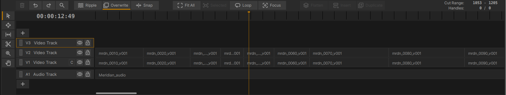
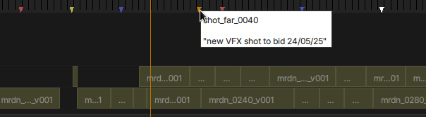

The Timeline
{kind=link}

The Timeline Interface
xSTUDIO の Timeline/Sequence インターフェースでは、マルチトラックのビデオ編集の読み込み、作成、書き出し、および操作を行えます。一般的な編集ツールに加えて、VFX やアニメーションの レビュー ワークフローに特化した機能もいくつか備わっています。
Sequence Creation
開始するには、まず Playlist が必要です。Playlist を選択し、Playlists Panel 内の右クリック Context/More メニューから Add New->Sequence を使用します。次に、メディアが含まれている Playlist を選択して Media List Panel にメディアを表示させ、Media List からメディアを選択して Playlist Panel 内の Sequence オブジェクトにドラッグ＆ドロップします。あるいは、プレイリストからメディアを選択し、Media List 内で Add Media To->New Sequence … メニューオプションを選択することもできます。
クイックスタートの動画デモが こちら にあります。
Note
Sequence を作成する際、そのフレームレート (Frame Rate) を設定する必要があります。Sequence のフレームレートは重要です。なぜなら、Sequence のフレームレートと異なるフレームレートのメディアを Sequence に読み込んだ場合、xSTUDIO はそのメディアを Sequence 内で再生できるようにシンプルな「プルダウン (pull-down)」を実行するからです。しかし、このプルダウンは、クリップの長さが元のメディアの長さと一致しなくなったり、再生中にビデオフレームがドロップ (コマ落ち) したりするなど、いくつかの問題を引き起こす可能性があります。したがって、Sequence のフレームレートはソースメディアのフレームレートと一致させ、1 つの Sequence 内で異なるフレームレートのメディアを混在させないことをお勧めします。そのようなワークフローには、専用のプロフェッショナルな編集システムにあるような、より高度なリタイムツールが必要になります。
New Sequence ダイアログにはフレームレートを設定するためのドロップダウンが用意されており、xSTUDIO の環境設定でデフォルトのフレームレートを設定することも可能です。
Loading and Exporting Timelines
xSTUDIO は、優れた OpenTimelineIO Python モジュールを使用しており、Premiere や Avid のようなプロフェッショナルな編集ソフトウェアとの互換性を保つために、さまざまな形式でのタイムラインの読み込みや書き出しを可能にしています。タイムラインを読み込むには、xSTUDIO インターフェースの上部にあるメインメニューバーから File->Import->OTIO… メニューオプションを使用します。同様に、xSTUDIO の Sequence からタイムラインファイルを書き出すには、Playlists Panel 内で対象の Sequence を選択し、File->Export->Selected Sequence as OTIO… メニューオプションを使用します。
Note
Sequence を表現するための xSTUDIO の内部データモデルは、OTIO モデルに密接に基づいています。
Interacting with Sequences
タイムラインの基本的な編集ツールは、直感的に使いこなせるようになっているはずです。タイムラインのズームとパンの設定は、編集作業 (特に長編の編集) のナビゲーションにおいて重要です。デフォルトのホットキーショートカット F を押すと、タイムラインビューがすべてのクリップに再フォーカス (Re-focus) されます。つまり、Sequence の全期間がタイムラインウィンドウに収まるようにズームが自動調整されます。この目的のために「Fit All」ボタンを使用することもできます。
Basic Editing Features
ビデオトラックを作成および構築するには :
+ ボタンを使用して、新しいビデオトラックまたはオーディオトラックを作成します。
MediaList から Sequence のトラック内にメディアをドラッグ＆ドロップして、編集へのメディアの追加を開始します。
左側のツールボックスにあるボタンを使ってツールをアクティブにし、クリップの移動、トリミング、カット、および Sequence のナビゲーションを行います :
タイムライン内のクリップをクリック選択またはドラッグ選択するには、Select ツールを使用します。
左側のツールボックスにあるボタンを使用して Move ツールにアクセスし、タイムライン上でクリップのドラッグ移動を開始します。
Move モードでは、マウスをクリップの端にホバーするとハンドルが表示され、これを使ってクリップの前端または後端をトリミングしたり延長したりできます (ただし、元のメディアの利用可能な長さの範囲内に限られます)。
Roll ツールを使用すると、クリップ内をクリックしてドラッグできます。これにより、メディアの利用可能な範囲内でクリップのアクティブな範囲をスライドさせることができます。これは、クリップをトリミングしてハンドル (余白) が存在する場合にのみ有効です。
Cut ツールを使用すると、マウスの下にあるクリップを左マウスボタンのクリックで 2 つのクリップに分割できます。
Zoom ツールを使用すると、タイムライン内をクリックしてドラッグすることで、Timeline の表示スケールを変更できます。CTRL キーを押しながらマウスの中央ホイール (お使いの場合) をスクロールすることでもズームを調整できます。
Pan ツールを使用すると、マウスの左右ドラッグでタイムラインの表示ウィンドウをスライドさせることができます。
Focus Mode
対応するボタン (インターフェースの中央上部付近) をクリックして、Focus モードをアクティブにします。このモードは、VFX やアニメーションのレビューにおいて非常に役立ちます。この機能は、選択されたクリップまたはトラックが、スタックの最上位に配置されていなくても、常に表示されるように保証する というものです。つまり、タイムライン上にさまざまなバージョンやアウトプットがコンフォームされた、複数のビデオトラックのスタックがある状況を想定してください。編集全体を確認したいものの、特定の 1 カットだけは下位のビデオトラックに埋もれている古いバージョンを確認したい場合、その特定のクリップを選択して Focus モードを使用します。これにより、選択されたクリップが再生中に表示されるようになり、通常であればそれを隠してしまう他のクリップを上書き (オーバーライド) します。同様のロジックをビデオトラック全体に適用することも可能です。
Looping on a Section
対応するボタン (Focus モード ボタンの隣) をクリックして、Loop モードをアクティブにします。再生中、プレイヘッドは Sequence 内の選択された項目の範囲内のみをループ再生します。
Ripple Mode
対応するボタンをクリックして、Ripple モードをアクティブにします。このモードがオンのとき、Move ツールを使用してクリップをスライドさせると、同じビデオトラック内にあるそのクリップに 続く すべてのクリップが同じ量だけスライドします。
Overwrite Mode
対応するボタンをクリックして、Overwrite モードをアクティブにします。このモードがオンのとき、Move ツールを使用してクリップをスライドさせると、他のクリップの上に重ねてスライドさせることができます。マウスボタンを離すとクリップがその場所に配置され、下にあるクリップは、移動したクリップのビデオトラック内での新しいタイミングに合わせて自動的に分割・スプライスされます。
{kind=link}
Sequence Markers
タイムラインの空白部分のどこかでマウスを右クリックし、Add Marker を選択することで、Sequence にシンプルなマーカーを追加できます。新しいマーカーは、現在のプレイヘッドの位置に作成されます。ポインターをマーカーの上にホバーした状態でマウスを右クリックするとメニューが表示され、カラー、マーカーの名前、およびその後マーカーがクリックされたときに表示されるコメント文字列を設定できます。
{kind=link}
